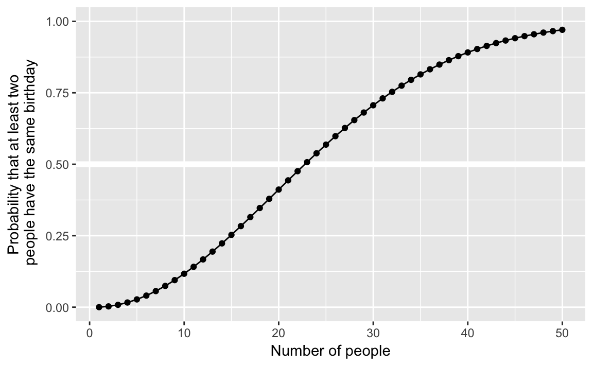
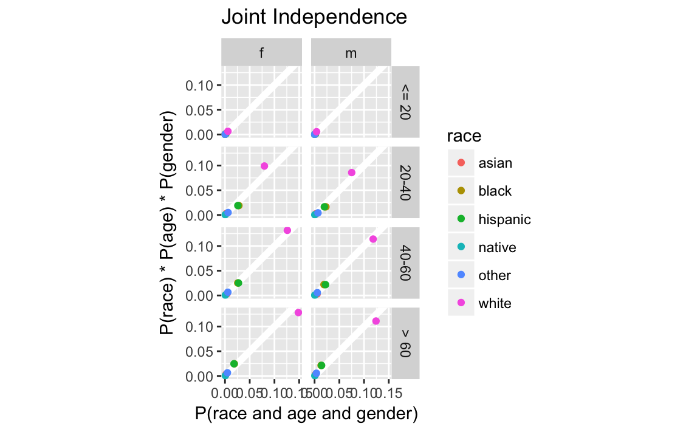
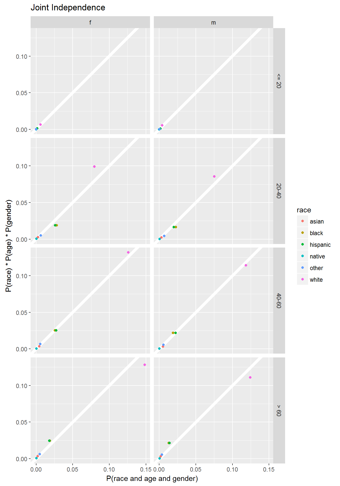
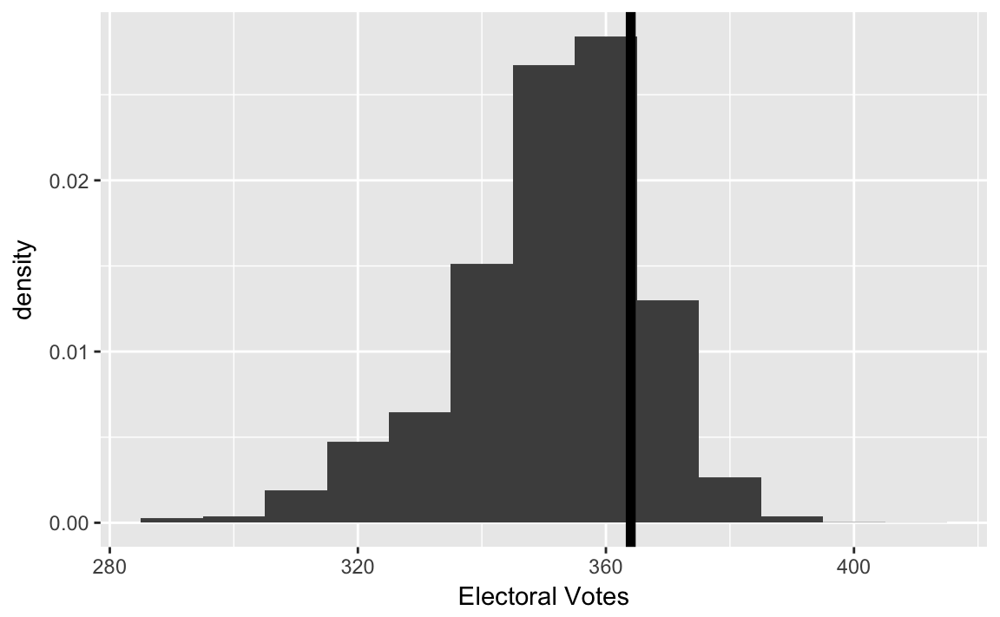
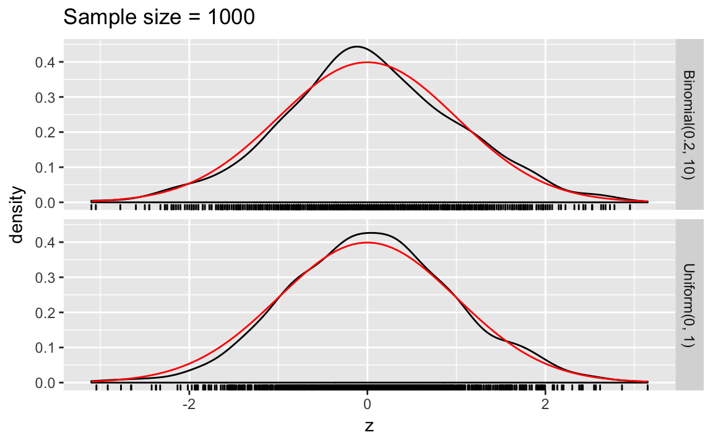
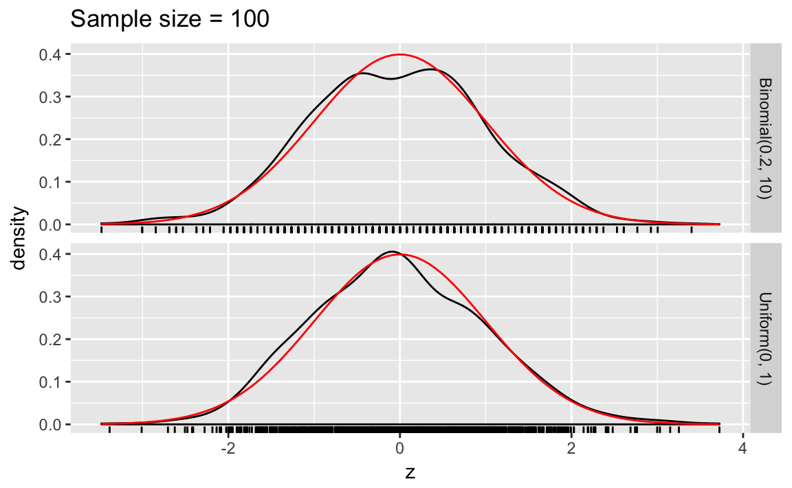

7 Probability
7.1 Prerequisites
library("tidyverse")
library("forcats")
library("stringr")7.2 Probability
Original code
k <- 23 # number of people
sims <- 1000 # number of simulations event <- 0 # counter
for (i in 1:sims) {
days <- sample(1:365, k, replace = TRUE)
days.unique <- unique(days) # unique birthdays
## if there are duplicates, the number of unique birthdays ## will be less than the number of birthdays, which is `k' if (length(days.unique) < k) {
event <- event + 1
}
}
## fraction of trials where at least two bdays are the same
answer <- event / sims
answertidyverse
birthday <- function(k) {
logdenom <- k * log(365) + lfactorial(365 - k)
lognumer <- lfactorial(365)
pr <- 1 - exp(lognumer - logdenom)
pr
}
bday <- tibble(k = 1:50,
pr = birthday(k))
ggplot(bday, aes(x = k , y = pr)) +
geom_hline(yintercept = 0.5, colour = "white", size = 2) +
geom_point() +
scale_y_continuous("Probability that at least two\n people have the same birthday", limits = c(0, 1)) +
labs(x = "Number of people")
Note: The logarithm is used for numerical stability. Basically, “floating-point” numbers are approximations of numbers. If you perform arithmetic with numbers that are very large, very small, or vary differently in magnitudes, you could have problems. Logarithms help with some of those issues. See “Falling Into the Floating Point Trap” in The R Inforno for a summary of floating point numbers. See these John Fox posts 1 2 for an example of numerical stability gone wrong. Also see: http://andrewgelman.com/2016/06/11/log-sum-of-exponentials/.
7.2.1 Sampling without replacement
Original code:
k <- 23 # number of people
sims <- 1000 # number of simulations event <- 0 # counter
for (i in 1:sims) {
days <- sample(1:365, k, replace = TRUE)
days.unique <- unique(days) # unique birthdays
## if there are duplicates, the number of unique birthdays ## will be less than the number of birthdays, which is `k' if (length(days.unique) < k) {
event <- event + 1
}
}
## fraction of trials where at least two bdays are the same
answer <- event / sims
answertidyverse code: Instead of using a for loop, we could do the simulations using a functional as described in R for Data Science. Define the function sim_bdays to randomly sample k birthdays, and returns TRUE if there are any duplicates.
sim_bdays <- function(k) {
days <- sample(1:365, k, replace = TRUE)
length(unique(days)) < k
}Set the parameters for 1,000 simulations, and 23 individuals. We use map_lgl since sim_bdays returns a logical value (TRUE, FALSE):
sims <- 1000
k <- 23
map_lgl(seq_len(sims), ~ sim_bdays(k)) %>%
mean()
#> [1] 0.4867.2.2 Combinations
Original code
choose(84, 6)
#> [1] 4.06e+087.3 Conditional Probability
7.3.1 Conditional, Marginal, and Joint Probabilities
Original:
FLVoters <- read.csv("FLVoters.csv") dim(FLVoters) # before removal of missing data
## [1] 10000 6
FLVoters <- na.omit(FLVoters)
dim(FLVoters) # after removaltidyverse
FLVoters <- read_csv(qss_data_url("probability", "FLVoters.csv"))
#> Parsed with column specification:
#> cols(
#> surname = col_character(),
#> county = col_integer(),
#> VTD = col_integer(),
#> age = col_integer(),
#> gender = col_character(),
#> race = col_character()
#> )
dim(FLVoters)
#> [1] 10000 6
FLVoters <- FLVoters %>%
na.omit()original:
margin.race <- prop.table(table(FLVoters$race))
margin.race
margin.gender <- prop.table(table(FLVoters$gender))
margin.gendertidyverse: Instead of using prop.base, we calculate the probabilities with a data frame. Marginal probabilities of race,
margin_race <-
FLVoters %>%
count(race) %>%
mutate(prop = n / sum(n))
margin_race
#> # A tibble: 6 × 3
#> race n prop
#> <chr> <int> <dbl>
#> 1 asian 175 0.01920
#> 2 black 1194 0.13102
#> 3 hispanic 1192 0.13080
#> 4 native 29 0.00318
#> 5 other 310 0.03402
#> 6 white 6213 0.68177Marginal probabilities of gender:
margin_gender <- FLVoters %>%
count(gender) %>%
mutate(prop = n / sum(n))
margin_gender
#> # A tibble: 2 × 3
#> gender n prop
#> <chr> <int> <dbl>
#> 1 f 4883 0.536
#> 2 m 4230 0.464Original:
prop.table(table(FLVoters$race[FLVoters$gender == "f"]))tidyverse:
FLVoters %>%
filter(gender == "f") %>%
count(race) %>%
mutate(prop = n / sum(n))
#> # A tibble: 6 × 3
#> race n prop
#> <chr> <int> <dbl>
#> 1 asian 83 0.01700
#> 2 black 678 0.13885
#> 3 hispanic 666 0.13639
#> 4 native 17 0.00348
#> 5 other 158 0.03236
#> 6 white 3281 0.67192Original:
joint.p <- prop.table(table(race = FLVoters$race, gender = FLVoters$gender))
joint.p
#> gender
#> race f m
#> asian 0.00911 0.01010
#> black 0.07440 0.05662
#> hispanic 0.07308 0.05772
#> native 0.00187 0.00132
#> other 0.01734 0.01668
#> white 0.36004 0.32174tidyverse:
joint_p <-
FLVoters %>%
count(gender, race) %>%
# needed because it is still grouped by gender
ungroup() %>%
mutate(prop = n / sum(n))
joint_p
#> # A tibble: 12 × 4
#> gender race n prop
#> <chr> <chr> <int> <dbl>
#> 1 f asian 83 0.00911
#> 2 f black 678 0.07440
#> 3 f hispanic 666 0.07308
#> 4 f native 17 0.00187
#> 5 f other 158 0.01734
#> 6 f white 3281 0.36004
#> # ... with 6 more rowsWe can convert the data frame to have gender as columns:
joint_p %>%
ungroup() %>%
select(-n) %>%
spread(gender, prop)
#> # A tibble: 6 × 3
#> race f m
#> * <chr> <dbl> <dbl>
#> 1 asian 0.00911 0.01010
#> 2 black 0.07440 0.05662
#> 3 hispanic 0.07308 0.05772
#> 4 native 0.00187 0.00132
#> 5 other 0.01734 0.01668
#> 6 white 0.36004 0.32174Original:
rowSums(joint.p)tidyverse: Sum over race:
joint_p %>%
group_by(race) %>%
summarise(prop = sum(prop))
#> # A tibble: 6 × 2
#> race prop
#> <chr> <dbl>
#> 1 asian 0.01920
#> 2 black 0.13102
#> 3 hispanic 0.13080
#> 4 native 0.00318
#> 5 other 0.03402
#> 6 white 0.68177Original:
colSums(joint.p)tidyverse: Sum over gender
joint_p %>%
group_by(gender) %>%
summarise(prop = sum(prop))
#> # A tibble: 2 × 2
#> gender prop
#> <chr> <dbl>
#> 1 f 0.536
#> 2 m 0.464Original:
FLVoters$age.group <- NA # initialize a variable
FLVoters$age.group[FLVoters$age <= 20] <- 1
FLVoters$age.group[FLVoters$age > 20 & FLVoters$age <= 40] <- 2 FLVoters$age.group[FLVoters$age > 40 & FLVoters$age <= 60] <- 3 FLVoters$age.group[FLVoters$age > 60] <- 4tidyverse: Use the cut
FLVoters <-
FLVoters %>%
mutate(age_group = cut(age, c(0, 20, 40, 60, Inf), right = TRUE,
labels = c("<= 20", "20-40", "40-60", "> 60")))Original:
joint3 <-
prop.table(table(race = FLVoters$race, age.group = FLVoters$age.group,
gender = FLVoters$gender))
joint3tidyverse:
joint3 <-
FLVoters %>%
count(race, age_group, gender) %>%
ungroup() %>%
mutate(prop = n / sum(n))
joint3
#> # A tibble: 47 × 5
#> race age_group gender n prop
#> <chr> <fctr> <chr> <int> <dbl>
#> 1 asian <= 20 f 1 0.000110
#> 2 asian <= 20 m 2 0.000219
#> 3 asian 20-40 f 24 0.002634
#> 4 asian 20-40 m 26 0.002853
#> 5 asian 40-60 f 38 0.004170
#> 6 asian 40-60 m 47 0.005157
#> # ... with 41 more rowsoriginal:
margin.age <- prop.table(table(FLVoters$age.group))
margin.age
joint3["black", 4, "f"] / margin.age[4]tidyverse: Marginal probabilities by age groups
margin_age <-
FLVoters %>%
count(age_group) %>%
mutate(prop = n / sum(n))
margin_age
#> # A tibble: 4 × 3
#> age_group n prop
#> <fctr> <int> <dbl>
#> 1 <= 20 161 0.0177
#> 2 20-40 2469 0.2709
#> 3 40-60 3285 0.3605
#> 4 > 60 3198 0.3509Calculate the probabilities that each group is in a given age group, and show $P( | )
left_join(joint3,
select(margin_age, age_group, margin_age = prop),
by = "age_group") %>%
mutate(prob_age_group = prop / margin_age) %>%
filter(race == "black", gender == "f", age_group == "> 60") %>%
select(race, age_group, gender, prob_age_group)
#> # A tibble: 1 × 4
#> race age_group gender prob_age_group
#> <chr> <fctr> <chr> <dbl>
#> 1 black > 60 f 0.0538Original:
joint2 <- prop.table(table(age.group = FLVoters$age.group,
gender = FLVoters$gender))
joint2
joint2[4, "f"]
joint3["black", 4, "f"] / joint2[4, "f"]tidyverse: Two-way joint probability table for age group and gender
joint2 <- FLVoters %>%
count(age_group, gender) %>%
ungroup() %>%
mutate(prob_age_gender = n / sum(n))
joint2
#> # A tibble: 8 × 4
#> age_group gender n prob_age_gender
#> <fctr> <chr> <int> <dbl>
#> 1 <= 20 f 88 0.00966
#> 2 <= 20 m 73 0.00801
#> 3 20-40 f 1304 0.14309
#> 4 20-40 m 1165 0.12784
#> 5 40-60 f 1730 0.18984
#> 6 40-60 m 1555 0.17064
#> # ... with 2 more rowsThe joint probability \(P(\text{age} > 60 \land \text{female})\),
filter(joint2, age_group == "> 60", gender == "f")
#> # A tibble: 1 × 4
#> age_group gender n prob_age_gender
#> <fctr> <chr> <int> <dbl>
#> 1 > 60 f 1761 0.193The onditional probablities \(P(race | gender, age)\),
condprob_race <-
left_join(joint3, select(joint2, -n), by = c("age_group", "gender")) %>%
mutate(prob_race = prop / prob_age_gender) %>%
arrange(age_group, gender) %>%
select(age_group, gender, race, prob_race)Each row is the \(P(race | age_group, gender)\), so \(P(\text{black} | \text{female} \land \text{age} > 60)\),
filter(condprob_race, gender == "f", age_group == "> 60", race == "black")
#> # A tibble: 1 × 4
#> age_group gender race prob_race
#> <fctr> <chr> <chr> <dbl>
#> 1 > 60 f black 0.09777.3.2 Independence
Original code
plot(c(margin.race * margin.gender["f"]), # product of marginal probs.
c(joint.p[, "f"]), # joint probabilities
xlim = c(0, 0.4), ylim = c(0, 0.4),
xlab = "P(race) * P(female)", ylab = "P(race and female)")
abline(0, 1) # 45 degree lineTidyverse
Create a table with the products of margins of race and age. Using the function crossing to create a tibble with all combinations of race and gender and the indep prob
race_gender_indep <-
crossing(select(margin_race, race, prob_race = prop),
select(margin_gender, gender, prob_gender = prop)) %>%
mutate(prob_indep = prob_race * prob_gender) %>%
left_join(select(joint_p, gender, race, prob = prop),
by = c("gender", "race")) %>%
select(race, gender, everything())
race_gender_indep
#> # A tibble: 12 × 6
#> race gender prob_race prob_gender prob_indep prob
#> <chr> <chr> <dbl> <dbl> <dbl> <dbl>
#> 1 asian f 0.0192 0.536 0.01029 0.00911
#> 2 asian m 0.0192 0.464 0.00891 0.01010
#> 3 black f 0.1310 0.536 0.07021 0.07440
#> 4 black m 0.1310 0.464 0.06082 0.05662
#> 5 hispanic f 0.1308 0.536 0.07009 0.07308
#> 6 hispanic m 0.1308 0.464 0.06071 0.05772
#> # ... with 6 more rowsggplot(race_gender_indep,
aes(x = prob_indep, y = prob, colour = race)) +
geom_abline(intercept = 0, slope = 1, colour = "white", size = 2) +
geom_point() +
facet_grid(. ~ gender) +
coord_fixed() +
theme(legend.position = "bottom") +
labs(x = expression(P("race") * P("gender")),
y = expression(P("race and gender")))
Original code
## joint independence
plot(c(joint3[, 4, "f"]), # joint probability
margin.race * margin.age[4] * margin.gender["f"], # product of marginals xlim = c(0, 0.3), ylim = c(0, 0.3), main = "joint independence",
xlab = "P(race and above 60 and female)",
ylab = "P(race) * P(above 60) * P(female)")
abline(0, 1)
## conditional independence given female
plot(c(joint3[, 4, "f"]) / margin.gender["f"], # joint prob. given female
## product of marginals
(joint.p[, "f"] / margin.gender["f"]) *
(joint2[4, "f"] / margin.gender["f"]),
xlim = c(0, 0.3), ylim = c(0, 0.3), main = "marginal independence",
xlab = "P(race and above 60 | female)",
ylab = "P(race | female) * P(above 60 | female)")
abline(0, 1)While the original code only calculates joint-independence value for values of age > 60, and female, this calculates the joint probabilities for all combinations of the three variables, and facets by age and gender.
joint_indep <-
# all combinations of race, age, gender
crossing(select(margin_race, race, prob_race = prop),
select(margin_age, age_group, prob_age = prop),
select(margin_gender, gender, prob_gender = prop)) %>%
mutate(indep_prob = prob_race * prob_age * prob_gender) %>%
left_join(select(joint3, race, age_group, gender, prob = prop),
by = c("gender", "age_group", "race")) %>%
replace_na(list(prob = 0))
ggplot(joint_indep, aes(x = prob, y = indep_prob, colour = race)) +
geom_abline(intercept = 0, slope = 1, colour = "white", size = 2) +
geom_point() +
facet_grid(age_group ~ gender) +
coord_fixed() +
labs(x = "P(race and age and gender)",
y = "P(race) * P(age) * P(gender)",
title = "Joint Independence")

The original code only calculates the conditional independence given female; this calculates conditional independence for all values of gender:
cond_gender <-
left_join(select(joint3, race, age_group, gender, joint_prob = prop),
select(margin_gender, gender, prob_gender = prop),
by = c("gender")) %>%
mutate(cond_prob = joint_prob / prob_gender)
# P(race | gender)
prob_race_gender <-
left_join(select(joint_p, race, gender, prob_race_gender = prop),
select(margin_gender, gender, prob_gender = prop),
by = "gender") %>%
mutate(prob_race = prob_race_gender / prob_gender)
# P(age | gender)
prob_age_gender <-
left_join(select(joint2, age_group, gender, prob_age_gender),
select(margin_gender, gender, prob_gender = prop),
by = "gender") %>%
mutate(prob_age = prob_age_gender / prob_gender)
# indep prob of race and age
indep_cond_gender <-
full_join(select(prob_race_gender, race, gender, prob_race),
select(prob_age_gender, age_group, gender, prob_age),
by = "gender") %>%
mutate(indep_prob = prob_race * prob_age)
inner_join(select(indep_cond_gender, race, age_group, gender, indep_prob),
select(cond_gender, race, age_group, gender, cond_prob),
by = c("gender", "age_group", "race")) %>%
ggplot(aes(x = cond_prob, y = indep_prob, colour = race)) +
geom_abline(intercept = 0, slope = 1, colour = "white", size = 2) +
geom_point() +
facet_grid(age_group ~ gender) +
coord_fixed() +
labs(x = "P(race and age | gender)",
y = "P(race | gender) * P(age | gender)",
title = "Marginal independence")
Orginal code for the Monty-Hall problem
sims <- 1000
doors <- c("goat", "goat", "car")
result.switch <- result.noswitch <- rep(NA, sims)
for (i in 1:sims) {
## randomly choose the initial door
first <- sample(1:3, size = 1)
result.noswitch[i] <- doors[first]
remain <- doors[-first] # remaining two doors
## Monty chooses one door with a goat
monty <- sample((1:2)[remain == "goat"], size = 1)
result.switch[i] <- remain[-monty]
}
mean(result.noswitch == "car")This code doesn’t rely on any non-tidyverse code, but the following is another way to write it.
First, create a function for a single iteration. This will save the results as data frame.
choose_door <- function(.id) {
# put doors inside the function to ensure it doesn't get changed
doors <- c("goat", "goat", "car")
first <- sample(1:3, 1)
remain <- doors[-first]
monty <- sample((1:2)[remain == "goat"], size = 1)
ret <- tribble(~strategy, ~result,
"no switch", doors[first],
"switch", remain[-monty])
ret[[".id"]] <- .id
ret
}Now use map_df to run choose_door multiple times, and then summarize the results:
sims <- 1000
results <- map_df(seq_len(sims), choose_door)
results %>%
group_by(strategy) %>%
summarise(pct_win = mean(result == "car"))
#> # A tibble: 2 × 2
#> strategy pct_win
#> <chr> <dbl>
#> 1 no switch 0.35
#> 2 switch 0.65Can we make this even more general? What about a function that takes a data frame as its input with the choices? …
7.3.3 Predicting Race Using Surname and Residence Location
Start with the Census names files:
cnames <- read_csv(qss_data_url("probability", "names.csv"))
#> Parsed with column specification:
#> cols(
#> surname = col_character(),
#> count = col_integer(),
#> pctwhite = col_double(),
#> pctblack = col_double(),
#> pctapi = col_double(),
#> pcthispanic = col_double(),
#> pctothers = col_double()
#> )
glimpse(cnames)
#> Observations: 151,671
#> Variables: 7
#> $ surname <chr> "SMITH", "JOHNSON", "WILLIAMS", "BROWN", "JONES", ...
#> $ count <int> 2376206, 1857160, 1534042, 1380145, 1362755, 11278...
#> $ pctwhite <dbl> 73.34, 61.55, 48.52, 60.72, 57.69, 85.80, 64.73, 6...
#> $ pctblack <dbl> 22.22, 33.80, 46.72, 34.54, 37.73, 10.41, 30.77, 0...
#> $ pctapi <dbl> 0.40, 0.42, 0.37, 0.41, 0.35, 0.42, 0.40, 1.43, 0....
#> $ pcthispanic <dbl> 1.56, 1.50, 1.60, 1.64, 1.44, 1.43, 1.58, 90.82, 9...
#> $ pctothers <dbl> 2.48, 2.73, 2.79, 2.69, 2.79, 1.94, 2.52, 1.09, 0....For each surname, contains variables with the probability that it belongs to an individual of a given race (pctwhite, pctblack, …). We want to find the most-likely race for a given surname, by finding the race with the maximum proportion. Instead of dealing with multiple variables, it is easier to use max on a single variable, so we will rearrange the data to in order to use a grouped summarise, and then merge the new variable back to the original datasets.
Note, this code takes a while.
most_likely <-
cnames %>%
select(-count) %>%
gather(race_pred, pct, -surname) %>%
# remove pct prefix
mutate(race_pred = str_replace(race_pred, "^pct", "")) %>%
# group by surname
group_by(surname) %>%
filter(pct == max(pct)) %>%
# if there are ties, keep only one obs
slice(1) %>%
# don't need pct anymore
select(-pct) %>%
mutate(race_pred = factor(race_pred),
# need to convert to factor first, else errors
race_pred = fct_recode(race_pred,
"asian" = "api", "other" = "others"))Now merge that back to the original cnames
cnames <- left_join(cnames, most_likely, by = "surname")Intead of using match, use inner_join to merge the surnames to FLVoters
FLVoters <- inner_join(FLVoters, cnames, by = "surname")
dim(FLVoters)
#> [1] 8022 14FLVoters also includes a “native” category that the surname dataset does not.
FLVoters <- FLVoters %>%
mutate(race2 = fct_recode(race, other = "native"))Check that the levels of race and race_pred are the same:
FLVoters %>%
count(race2)
#> # A tibble: 5 × 2
#> race2 n
#> <fctr> <int>
#> 1 asian 140
#> 2 black 1078
#> 3 hispanic 1023
#> 4 other 277
#> 5 white 5504FLVoters %>%
count(race_pred)
#> # A tibble: 5 × 2
#> race_pred n
#> <fctr> <int>
#> 1 white 6516
#> 2 black 258
#> 3 hispanic 1121
#> 4 asian 120
#> 5 other 7Now we can calculate True positive rate for all races
FLVoters %>%
group_by(race2) %>%
summarise(tp = mean(race2 == race_pred)) %>%
arrange(desc(tp))
#> # A tibble: 5 × 2
#> race2 tp
#> <fctr> <dbl>
#> 1 white 0.95022
#> 2 hispanic 0.84653
#> 3 asian 0.56429
#> 4 black 0.16048
#> 5 other 0.00361and the False discovery rate for all races,
FLVoters %>%
group_by(race_pred) %>%
summarise(fp = mean(race2 != race_pred)) %>%
arrange(desc(fp))
#> # A tibble: 5 × 2
#> race_pred fp
#> <fctr> <dbl>
#> 1 other 0.857
#> 2 asian 0.342
#> 3 black 0.329
#> 4 hispanic 0.227
#> 5 white 0.197Now add get residence data
FLCensus <- read_csv(qss_data_url("probability", "FLCensusVTD.csv"))
#> Parsed with column specification:
#> cols(
#> county = col_integer(),
#> VTD = col_integer(),
#> total.pop = col_integer(),
#> white = col_double(),
#> black = col_double(),
#> hispanic = col_double(),
#> api = col_double(),
#> others = col_double()
#> )\(P(race)\) in Florida:
race.prop <-
FLCensus %>%
select(total.pop, white, black, api, hispanic, others) %>%
gather(race, pct, -total.pop) %>%
group_by(race) %>%
summarise(mean = weighted.mean(pct, weights = total.pop)) %>%
arrange(desc(mean))
race.prop
#> # A tibble: 5 × 2
#> race mean
#> <chr> <dbl>
#> 1 white 0.6045
#> 2 hispanic 0.2128
#> 3 black 0.1394
#> 4 api 0.0219
#> 5 others 0.02147.3.4 Predicting Election Outcomes with Uncertainty
Original code
pres08 <- read.csv("pres08.csv")
## two-party vote share
pres08$p <- pres08$Obama / (pres08$Obama + pres08$McCain)Tidyverse code
pres08 <- read_csv(qss_data_url("probability", "pres08.csv")) %>%
mutate(p = Obama / (Obama + McCain))
#> Parsed with column specification:
#> cols(
#> state.name = col_character(),
#> state = col_character(),
#> Obama = col_integer(),
#> McCain = col_integer(),
#> EV = col_integer()
#> )Original code
n.states <- nrow(pres08) # number of states
n <- 1000 # number of respondents
sims <- 10000 # number of simulations
## Obama's electoral votes
Obama.ev <- rep(NA, sims)
for (i in 1:sims) {
## samples number of votes for Obama in each state
draws <- rbinom(n.states, size = n, prob = pres08$p)
## sums state's electoral college votes if Obama wins the majority
Obama.ev[i] <- sum(pres08$EV[draws > n/2])
}
hist(Obama.ev, freq = FALSE, main = "Prediction of Election Outcome",
xlab = "Obama's Electoral College Votes") abline(v = 364, col = "red") # actual resultTidyverse code
Write a function to simulate the elections. df is the data frame (pres08) with the state, EV, and p columns. n_draws is the size of the binomial distribution to draw from. .id is the simulation number.
sim_election <- function(.id, df, n_draws = 1000) {
# For each state randomly sample
mutate(df,
draws = rbinom(n(), n_draws, p)) %>%
filter(draws > (n_draws / 2)) %>%
summarise(EV = sum(EV),
.id = .id)
}Now simulate the election 10,000 times:
sims <- 10000
sim_results <- map_df(seq_len(sims), ~ sim_election(.x, pres08, n_draws = 1000))In the 2008 election, Obama received 364 electoral votes
ELECTION_EV <- 364And plot them,
ggplot(sim_results, aes(x = EV)) +
geom_histogram(binwidth = 10) +
geom_vline(xintercept = ELECTION_EV, colour = "red", size = 2)
Original code
mean(Obama.ev)
## [1] 352.1646
## probability of binomial random variable taking greater than n/2 votes
sum(pres08$EV * pbinom(n/2, size = n, prob = pres08$p, lower.tail = FALSE))
## [1] 352.1388
## approximate variance using Monte Carlo draws
var(Obama.ev)
## [1] 268.7592
## theoretical variance
pres08$pb <- pbinom(n/2, size = n, prob = pres08$p, lower.tail = FALSE)
V <- sum(pres08$pb*(1-pres08$pb)*pres08$EV^2)
V
## [1] 268.8008
## approximate standard deviation using Monte Carlo draws
sd(Obama.ev)
## [1] 16.39388
## theoretical standard deviation
sqrt(V)
## [1] 16.39515tidyverse code
Simulation mean, variance, and standard deviations:
sim_results %>%
select(EV) %>%
summarise_all(funs(mean, var, sd))
#> # A tibble: 1 × 3
#> mean var sd
#> <dbl> <dbl> <dbl>
#> 1 352 270 16.4Theoretical probabilities
# we cannot use n, because mutate will look for n() first.
n_draws <- 1000
pres08 %>%
mutate(pb = pbinom(n_draws / 2, size = n_draws, prob = p,
lower.tail = FALSE)) %>%
summarise(mean = sum(pb * EV),
V = sum(pb * (1 - pb) * EV ^ 2),
sd = sqrt(V))
#> # A tibble: 1 × 3
#> mean V sd
#> <dbl> <dbl> <dbl>
#> 1 352 269 16.47.4 Large Sample Theorems
7.4.1 Law of Large Numbers
Original:
sims <- 1000
## 3 separate simulations for each
x.binom <- rbinom(sims, p = 0.2, size = 10)
## computing sample mean with varying sample size
mean.binom <- cumsum(x.binom) / 1:simsTidyverse: Put the simulation number, x and mean in a tibble:
sims <- 1000
p <- 0.2
size = 10
lln_binom <- tibble(
n = seq_len(sims),
x = rbinom(sims, p = p, size = size),
mean = cumsum(x) / n,
distrib = str_c("Binomial(", size, ", ", p, ")"))Original:
## default runif() is uniform(0, 1)
x.unif <- runif(sims)
mean.unif <- cumsum(x.unif) / 1:simsTidyverse:
lln_unif <-
tibble(n = seq_len(sims),
x = runif(sims),
mean = cumsum(x) / n,
distrib = str_c("Uniform(0, 1)"))Original:
par(cex = 1.5)
## plot for binomial
plot(1:sims, mean.binom, type = "l", ylim = c(1, 3),
xlab = "Sample size", ylab = "Sample mean", main = "Binomial(10, 0.2)")
abline(h = 2, lty = "dashed") # expectation
## plot for uniform
plot(1:sims, mean.unif, type = "l", ylim = c(0, 1),
xlab = "Sample size", ylab = "Sample mean", main = "Uniform(0, 1)")
abline(h = 0.5, lty = "dashed") # expectationTidyverse:
true_means <-
tribble(~distrib, ~mean,
"Uniform(0, 1)", 0.5,
str_c("Binomial(", size, ", ", p, ")"), size * p)
ggplot() +
geom_hline(aes(yintercept = mean), data = true_means,
colour = "white", size = 2) +
geom_line(aes(x = n, y = mean),
data = bind_rows(lln_binom, lln_unif)) +
facet_grid(distrib ~ ., scales = "free_y") +
labs(x = "Sample Size", y = "Sample Mean")
7.4.2 Central Limit Theorem
Original:
par(cex = 1.5)
## sims = number of simulations
n.samp <- 1000
z.binom <- z.unif <- rep(NA, sims)
for (i in 1:sims) {
x <- rbinom(n.samp, p = 0.2, size = 10)
z.binom[i] <- (mean(x) - 2) / sqrt(1.6 / n.samp)
x <- runif(n.samp, min = 0, max = 1)
z.unif[i] <- (mean(x) - 0.5) / sqrt(1 / (12 * n.samp))
}
## histograms; nclass specifies the number of bins
hist(z.binom, freq = FALSE, nclass = 40, xlim = c(-4, 4), ylim = c(0, 0.6),
xlab = "z-score", main = "Binomial(0.2, 10)")
x <- seq(from = -3, to = 3, by = 0.01)
lines(x, dnorm(x)) # overlay the standard Normal PDF
hist(z.unif, freq = FALSE, nclass = 40, xlim = c(-4, 4), ylim = c(0, 0.6),
xlab = "z-score", main = "Uniform(0, 1)")
lines(x, dnorm(x))tidyverse: Instead of using a for loop, write functions to
The population mean of the binomial distribution is \(\mu = p n\) and the variance is \(\mu = p (1 - p) n\).
sims <- 1000
n_samp <- 1000
# Mean of binomial distribution
binom_mean <- function(size, p) {
size * p
}
# Variance of binomial distribution
binom_var <- function(size, p) {
size * p * (1 - p)
}
sim_binom_clt <- function(n_samp, size, p) {
x <- rbinom(n_samp, prob = p, size = size)
z <- (mean(x) - binom_mean(size, p)) /
sqrt(binom_var(size, p) / n_samp)
tibble(distrib = str_c("Binomial(", p, ", ", size, ")"),
z = z)
}
# Mean of uniform distribution
unif_mean <- function(min, max) {
0.5 * (min + max)
}
# Variance of uniform distribution
unif_var <- function(min, max) {
(1 / 12) * (max - min) ^ 2
}
sim_unif_clt <- function(n_samp, min = 0, max = 1) {
x <- runif(n_samp, min = min, max = max)
z <- (mean(x) - unif_mean(min, max)) /
sqrt(unif_var(min, max) / n_samp)
tibble(distrib = str_c("Uniform(", min, ", ", max, ")"),
z = z)
}Since we will calculate this for n_samp = 1000 and n_samp, we might as well write a function for it.
clt_plot <- function(n_samp) {
bind_rows(map_df(seq_len(sims), ~ sim_binom_clt(n_samp, size, p)),
map_df(seq_len(sims), ~ sim_unif_clt(n_samp))) %>%
ggplot(aes(x = z)) +
geom_density() +
geom_rug() +
stat_function(fun = dnorm, colour = "red") +
facet_grid(distrib ~ .) +
ggtitle(str_c("Sample size = ", n_samp))
}
clt_plot(1000)
clt_plot(100)